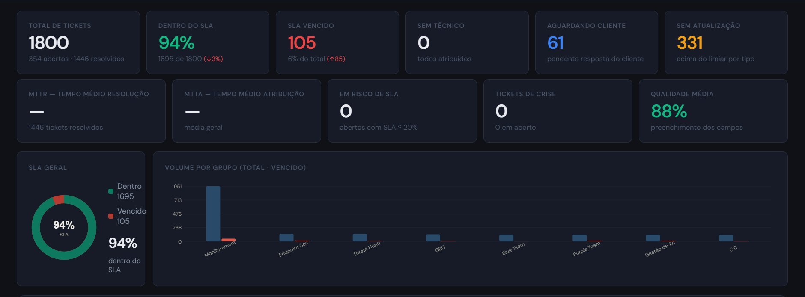
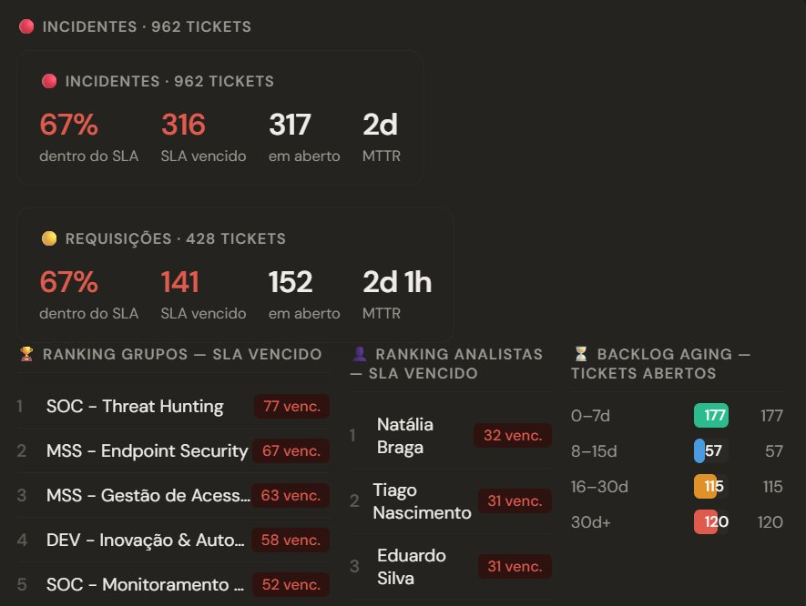
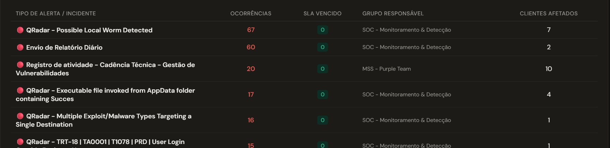
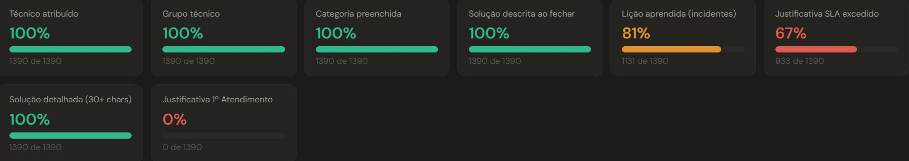
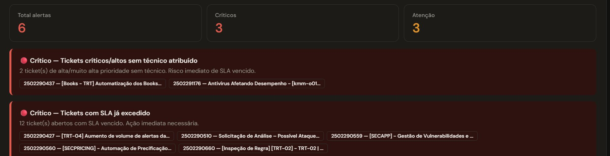
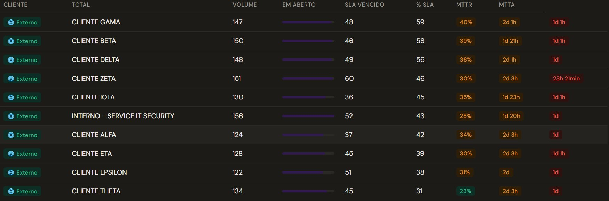

Governança de Segurança da Informação · GRC · Indicadores Estratégicos
"O que me move é chegar com dados reais, dar feedbacks concretos e garantir que nenhum SLA quebre. Mitigar risco antes que ele vire problema — é isso que eu faço."
Trabalho com Governança de Segurança da Informação e GRC e o que mais me move nessa área é chegar para os times e para a liderança com dados concretos. Não suposições, não feeling. Dados que mostram exatamente onde está o problema, quem precisa agir e o que precisa melhorar.
Apresento indicadores de segurança semanalmente para a diretoria e trabalho diretamente com os líderes técnicos de CTI, CSIRT, Threat Hunting, SOC, Endpoint e GRC para que a operação se mantenha dentro do SLA, com qualidade e sem surpresas.
Para fazer isso funcionar de verdade, construí do zero uma plataforma própria de monitoramento de indicadores integrada ao sistema de chamados da operação. Hoje ela acompanha mais de 20 clientes simultâneos, analisa mais de 1.000 tickets por semana e gera relatórios executivos automáticos que vão direto para a liderança.
Antes de chegar aqui, passei por SOC 24x7, análise de incidentes, gestão de TI e operações de grande porte, o que me deu uma visão técnica que a maioria dos profissionais de governança não tem. Entendo o que acontece no nível do analista e sei transformar isso em linguagem de negócio.
Da operação técnica à governança estratégica, uma evolução construída com consistência e propósito.
Desenvolvida do zero, sem budget para ferramentas prontas, só com visão analítica e domínio do negócio.
Plataforma web de monitoramento de KPIs integrada ao sistema de chamados de uma operação de segurança gerenciada com mais de 20 clientes e mais de 1.000 tickets semanais. Utilizada toda semana nas apresentações à diretoria.






Dados exibidos são fictícios e anonimizados para fins de demonstração.
Visão estratégica de governança combinada com experiência real em operações de segurança.
Números concretos que mostram o que acontece quando governança e dados trabalham juntos.
Cliente com contrato de alto valor e cláusula de multa significativa. O monitoramento proativo com alertas automáticos de risco manteve o SLA em 100% de conformidade por mais de 4 meses consecutivos, evitando impacto financeiro direto e fortalecendo a confiança contratual.
Mais de 20 clientes simultâneos com SLA, risco contratual e desempenho acompanhados semana a semana através da plataforma desenvolvida.
Mais de 1.000 tickets processados semanalmente com triagem, priorização, controle de SLA e geração automática de indicadores para a diretoria.
Experiência prática em ambiente de produção com as principais plataformas do mercado de segurança.
Aberta a oportunidades em Governança de SI, GRC e Indicadores Estratégicos. Presencial em São Paulo ou remoto.